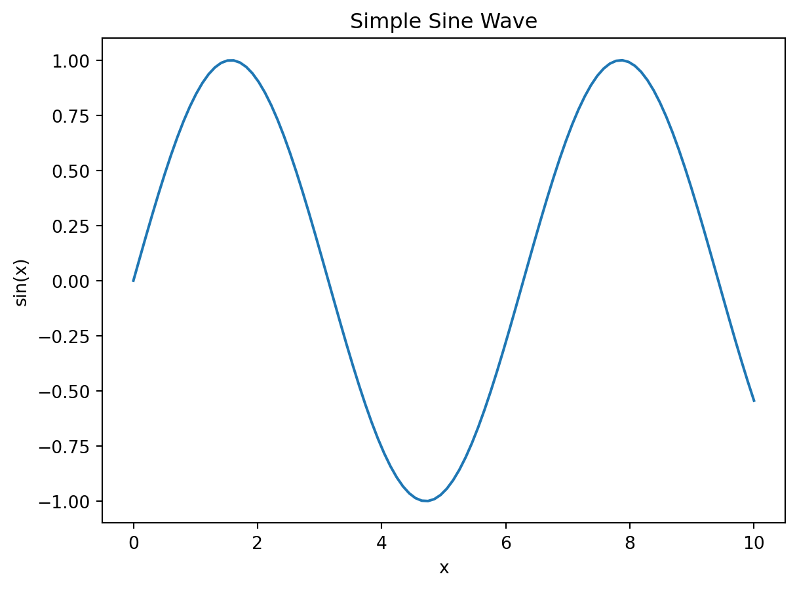
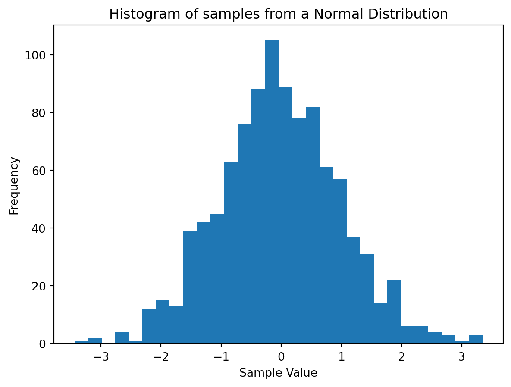

import numpy as np
print(np.__version__)1.26.4This chapter guides you through setting up the Python environment necessary for working through the examples and exercises in this book. We’ll cover installing the essential libraries and managing your Python environment effectively.
Several Python libraries are essential for implementing and visualizing Bayesian methods. We’ll focus on installing NumPy, SciPy, Matplotlib, and Pandas. While others exist, these form the core foundation.
NumPy (Numerical Python) is the fundamental package for scientific computing in Python. It provides powerful N-dimensional array objects and tools for working with them. You can install it using pip:
pip install numpyVerify the installation by opening a Python interpreter and typing:
import numpy as np
print(np.__version__)1.26.4This should print the installed NumPy version.
SciPy builds upon NumPy, providing a vast collection of algorithms for scientific computing, including optimization, statistics, and signal processing. Many Bayesian methods rely on SciPy’s functionalities. Install it with:
pip install scipyCheck the installation:
import scipy
print(scipy.__version__)1.11.4Matplotlib is a detailed plotting library that allows you to create static, interactive, and animated visualizations in Python. We’ll use it extensively to visualize probability distributions and Bayesian inference results. Install it using:
pip install matplotlibA simple plot to verify the installation:
import matplotlib.pyplot as plt
import numpy as np
x = np.linspace(0, 10, 100)
y = np.sin(x)
plt.plot(x, y)
plt.xlabel("x")
plt.ylabel("sin(x)")
plt.title("Simple Sine Wave")
plt.show()
This will generate a plot of a sine wave.
Pandas is a powerful data manipulation and analysis library. It provides data structures like DataFrames, which are particularly useful for organizing and working with datasets in Bayesian analysis. Install it with:
pip install pandasVerify the installation:
import pandas as pd
print(pd.__version__)2.2.3Depending on the specific Bayesian methods you wish to explore, you might need additional libraries. For example, statsmodels provides statistical modeling capabilities, and libraries like PyMC or Pyro are dedicated to probabilistic programming and Bayesian inference. Install these as needed using pip, e.g., pip install pymc3.
It’s highly recommended to manage your Python environments using tools like Conda or Virtualenv. This helps prevent conflicts between different project dependencies.
Conda: Conda is a powerful package and environment manager that can handle both Python and other languages. It’s particularly useful for managing complex dependencies.
Virtualenv: Virtualenv is a simpler tool specifically for managing Python environments.
(Illustrative Example with Conda)
Create an environment:
conda create -n bayes_env python=3.9 # Replace 3.9 with your desired Python versionActivate the environment:
conda activate bayes_envInstall packages:
conda install numpy scipy matplotlib pandasDeactivate the environment:
conda deactivateThis approach ensures that your project’s dependencies are isolated from other Python projects on your system. Similar steps can be followed using Virtualenv, though the commands will differ slightly. Choose the environment manager that best suits your workflow.
This chapter focuses on setting up your development environment for working with Bayesian methods using Python. We will cover choosing an Integrated Development Environment (IDE), setting it up, running your first script, and working with different file types.
Several excellent IDEs are suitable for Python development. The choice often comes down to personal preference and project needs.
VS Code (Visual Studio Code): A lightweight, versatile, and highly customizable code editor with excellent Python support through extensions. It’s a good all-around choice.
PyCharm: A powerful IDE specifically designed for Python development, offering advanced features like debugging, code completion, and integrated testing tools. It comes in both free (Community Edition) and paid (Professional Edition) versions.
Jupyter Notebook: Not strictly an IDE, but a powerful interactive computing environment ideal for exploring data, running code snippets, and creating richly formatted documents that combine code, output, and explanatory text. It’s excellent for iterative development and data analysis.
The setup process varies slightly depending on your chosen IDE. Generally, you’ll need to:
Install the IDE: Download and install your chosen IDE from its official website.
Install Python: Ensure you have Python installed on your system (refer to the previous chapter if needed). Some IDEs may have built-in Python interpreters or assist with the installation process.
Configure the IDE: Most IDEs require some initial configuration. This might involve selecting your Python interpreter, configuring linters (code style checkers), and installing relevant extensions (e.g., for Jupyter support in VS Code). Consult your IDE’s documentation for detailed instructions.
Let’s write and run a simple Python script to verify your setup. Create a file named hello.py and add the following code:
print("Hello, Bayesian World!")Hello, Bayesian World!Open your IDE, open the hello.py file, and run it. The output (“Hello, Bayesian World!”) should be displayed in your IDE’s console or terminal.
Python files (.py) contain your Python code. You write your Bayesian models, data processing functions, and visualization scripts in these files. Your IDE will provide features like syntax highlighting, code completion, and debugging tools to help you write and maintain your code effectively.
Jupyter Notebooks allow you to combine code, output, and Markdown text in a single document. This makes them ideal for exploratory data analysis, documenting your Bayesian analysis workflow, and sharing results.
To run a Jupyter Notebook:
Open a notebook: Start Jupyter Notebook from your terminal using the command jupyter notebook. This will open a web browser interface.
Create a new notebook: Click “New” and select “Python 3”.
Write and execute code: You can type Python code into cells and execute them using the “Run” button or Shift+Enter. The output appears directly below the cell.
Here’s an example of a simple Jupyter Notebook cell using Matplotlib:
import matplotlib.pyplot as plt
import numpy as np
x = np.linspace(0, 10, 100)
y = np.sin(x)
plt.plot(x, y)
plt.xlabel("x")
plt.ylabel("sin(x)")
plt.title("Simple Sine Wave")
plt.show()This will generate a plot within the Jupyter Notebook itself.
You can also add Markdown cells for text and explanations. For example, a simple Mermaid diagram explaining a Bayesian inference concept could be inserted in a Markdown cell like this:
graph LR
A[Prior] --> B{Data};
B --> C[Posterior];
style B fill:#ccf,stroke:#f66,stroke-width:2px
This will render a simple flow chart within the notebook. Jupyter Notebooks provide a very interactive and flexible way to work with Python code and data for Bayesian analysis.
This chapter introduces basic Python tools for working with probability, building a foundation for applying Bayesian methods.
Python offers many data structures well-suited for representing probabilistic concepts. Lists and dictionaries are commonly used:
Lists: Can represent sequences of events or outcomes. For example, outcomes = ['Heads', 'Tails'] represents the outcomes of a coin flip.
Dictionaries: Useful for storing probability distributions. Keys can represent events, and values can represent their probabilities. For example: probabilities = {'Heads': 0.5, 'Tails': 0.5} represents a fair coin.
NumPy arrays are particularly powerful for handling large datasets and performing numerical computations efficiently.
A random variable is a variable whose value is a numerical outcome of a random phenomenon. Python doesn’t have a specific “random variable” type, but we represent them using variables and numerical data. For example:
# Representing a discrete random variable (die roll)
die_roll = np.random.randint(1, 7) # Generates a random integer between 1 and 6 (inclusive)
print(f"The die roll is: {die_roll}")
# Representing a continuous random variable (height)
height = np.random.normal(170, 10) # Generates a random height from a normal distribution (mean=170, std=10)
print(f"The height is: {height:.2f}")The die roll is: 1
The height is: 174.29Basic probability calculations (e.g., calculating the probability of an event or the conditional probability of an event given another event) are straightforward in Python:
# Example: Probability of getting heads twice in a row with a fair coin
probability_heads = 0.5
probability_two_heads = probability_heads * probability_heads
print(f"Probability of two heads: {probability_two_heads}")
# Example: Conditional probability (Bayes' Theorem will be covered later)
#Let's assume:
#P(A|B) = 0.8 # Probability of event A given event B
#P(B) = 0.6 # Probability of event B
#P(A) = 0.7 # Probability of event A
#P(B|A) = (P(A|B) * P(B)) / P(A)
probability_B_given_A = (0.8 * 0.6) / 0.7
print(f"Probability of B given A: {probability_B_given_A:.2f}")Probability of two heads: 0.25
Probability of B given A: 0.69The random module (and numpy.random) provides functions for generating random numbers from various distributions:
import random
import numpy as np
# Generate a random float between 0 and 1
random_float = random.random()
print(f"Random float: {random_float}")
# Generate a random integer between 1 and 10 (inclusive)
random_integer = random.randint(1, 10)
print(f"Random integer: {random_integer}")
# Generate random numbers from a normal distribution
normal_random_numbers = np.random.normal(loc=0, scale=1, size=10) # mean=0, std=1, 10 numbers
print(f"Random numbers from a normal distribution: {normal_random_numbers}")Random float: 0.021925574365079026
Random integer: 8
Random numbers from a normal distribution: [-1.11825581 -0.96007133 0.84407854 0.24987352 -0.3923312 -1.08547078
-1.64477846 0.11779917 -1.29962105 0.40542599]Sampling from probability distributions is essential in Bayesian inference. NumPy’s random submodule offers various sampling methods:
# Sampling from a normal distribution
samples = np.random.normal(loc=0, scale=1, size=1000) # 1000 samples
#Visualizing the sample using Matplotlib
import matplotlib.pyplot as plt
plt.hist(samples, bins=30)
plt.title('Histogram of samples from a Normal Distribution')
plt.xlabel('Sample Value')
plt.ylabel('Frequency')
plt.show()
NumPy provides efficient array operations that simplify probability calculations. For example, we can calculate the mean and standard deviation of a sample:
# Calculate mean and standard deviation
mean = np.mean(samples)
std = np.std(samples)
print(f"Mean: {mean:.2f}")
print(f"Standard Deviation: {std:.2f}")Mean: -0.03
Standard Deviation: 1.01NumPy’s capabilities extend far beyond this, making it an essential tool for numerical probability and statistics. More advanced techniques like calculating probabilities from probability density functions will be covered in later chapters using SciPy.